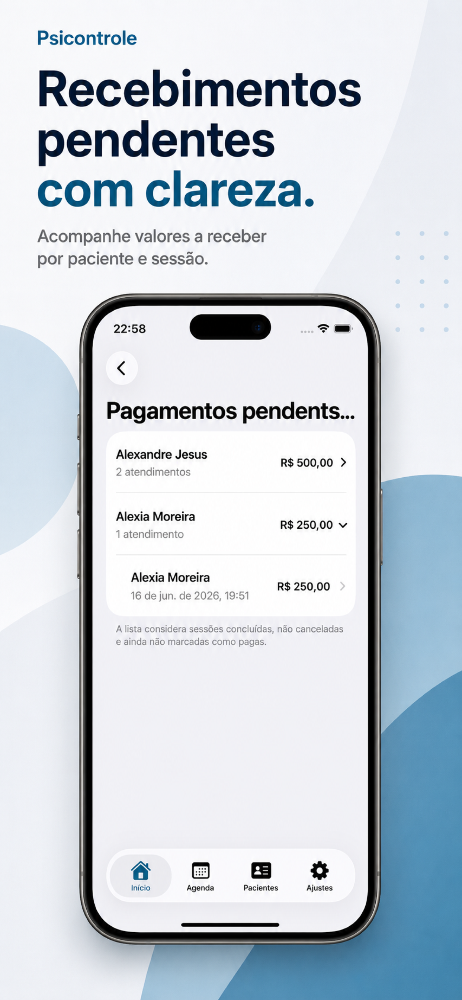

Atendimentos organizados por dia.
Veja os atendimentos de hoje, próximos compromissos, recorrências e lembretes com uma visão clara da semana clínica.
App nativo para iOS
O PsiControle reúne agenda, pacientes, lembretes, pendências e recebíveis em um app simples para iOS — com dados clínicos armazenados localmente no dispositivo.
Sem dashboard web. Sem conta externa. Feito para a rotina clínica diária.

Rotina clínica
Mantenha agenda, contexto do paciente, pendências e recebíveis sempre por perto — sem depender de planilhas, anotações soltas ou ferramentas desconectadas.
Veja os atendimentos de hoje, próximos compromissos, recorrências e lembretes com uma visão clara da semana clínica.
Mantenha contatos, documentos, endereço, notas, histórico e pendências conectados ao cadastro de cada paciente.
Acompanhe valores previstos, sessões não pagas e atendimentos ainda em aberto — sem transformar o app em um sistema financeiro complexo.
Agenda
Planeje o dia, acompanhe rotinas semanais ou quinzenais e mantenha lembretes alinhados ao Calendário do iOS.

Pacientes
Busque, filtre e revise cadastros com as informações mais importantes para sua rotina.

Recebíveis
Acompanhe sessões não pagas e recebimentos pendentes sem misturar organização clínica com um fluxo contábil completo.

Privacidade e segurança
O PsiControle foi pensado para reduzir exposição: os dados clínicos ficam no iPhone do usuário e não são compartilhados com terceiros.
Telas
Conheça as principais áreas do app: início, agenda, pacientes, recebíveis, sessões em aberto e ajustes.
PsiControle
Comece com um app simples, criado para psicólogos que querem clareza, privacidade e menos atrito operacional.
Baixar na App Store